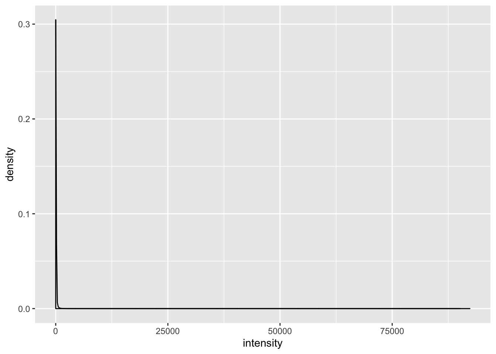

ssGSEA
mleukam
2019-06-09
Last updated: 2019-06-15
Checks: 7 0
Knit directory: tcga_macs/
This reproducible R Markdown analysis was created with workflowr (version 1.4.0). The Checks tab describes the reproducibility checks that were applied when the results were created. The Past versions tab lists the development history.
Great! Since the R Markdown file has been committed to the Git repository, you know the exact version of the code that produced these results.
Great job! The global environment was empty. Objects defined in the global environment can affect the analysis in your R Markdown file in unknown ways. For reproduciblity it’s best to always run the code in an empty environment.
The command set.seed(20190409) was run prior to running the code in the R Markdown file. Setting a seed ensures that any results that rely on randomness, e.g. subsampling or permutations, are reproducible.
Great job! Recording the operating system, R version, and package versions is critical for reproducibility.
Nice! There were no cached chunks for this analysis, so you can be confident that you successfully produced the results during this run.
Great job! Using relative paths to the files within your workflowr project makes it easier to run your code on other machines.
Great! You are using Git for version control. Tracking code development and connecting the code version to the results is critical for reproducibility. The version displayed above was the version of the Git repository at the time these results were generated.
Note that you need to be careful to ensure that all relevant files for the analysis have been committed to Git prior to generating the results (you can use wflow_publish or wflow_git_commit). workflowr only checks the R Markdown file, but you know if there are other scripts or data files that it depends on. Below is the status of the Git repository when the results were generated:
Ignored files:
Ignored: .DS_Store
Ignored: .Rhistory
Ignored: .Rproj.user/
Ignored: analysis/.DS_Store
Ignored: data/.DS_Store
Ignored: data/160genes_ensembl.gencode28.txt
Ignored: data/GSE46903_Affymetrix_Reanalyzed_data.txt.gz
Ignored: data/GSE46903_Affymetrix_metadata.txt.gz
Ignored: data/GSE46903_RAW.tar
Ignored: data/GSE46903_non-normalized.txt
Ignored: data/GSE46903_nonnormalized copy.tsv
Ignored: data/gencode.v22.primary_assembly.annotation.gtf.geneinfo
Ignored: data/gse_46903.rds
Ignored: data/htseq_counts/
Ignored: data/kyle.gdc_tcga_bam_metadata.txt
Ignored: docs/.DS_Store
Ignored: docs/assets/corrmatrix.tiff
Ignored: output/dge_frame.csv
Ignored: output/downreg_c1.csv
Ignored: output/downreg_c2.csv
Ignored: output/downreg_c3.csv
Ignored: output/downreg_c4.csv
Ignored: output/downreg_c5.csv
Ignored: output/downreg_c6.csv
Ignored: output/downreg_c7.csv
Ignored: output/expr_matrix.csv
Ignored: output/expr_matrix.rds
Ignored: output/expression_set.rds
Ignored: output/filtered.total.phenodata.csv
Ignored: output/filtered.total.phenodata.rds
Ignored: output/flat_total_counts.rds
Ignored: output/flat_total_pheno.rds
Ignored: output/gset_ids_complete.rds
Ignored: output/km_cluster_assignments.csv
Ignored: output/mac_eset.rds
Ignored: output/mac_eset_w_clusters.rds
Ignored: output/nested_list_dge_top50_updown.rds
Ignored: output/normalized_probe_intensities.Rds
Ignored: output/processed_lumi_46903.Rds
Ignored: output/processed_lumi_46903.tsv
Ignored: output/processed_lumi_exprs.txt
Ignored: output/score_matrix.csv
Ignored: output/selected.total.counts.csv
Ignored: output/selected.total.counts.rds
Ignored: output/table_c1.csv
Ignored: output/table_c2.csv
Ignored: output/table_c3.csv
Ignored: output/table_c4.csv
Ignored: output/table_c5.csv
Ignored: output/table_c6.csv
Ignored: output/table_c7.csv
Ignored: output/tcga_counts_dataframe_list.rds
Ignored: output/tcga_counts_list.rds
Ignored: output/tcga_gdc_manifest.rds
Ignored: output/tcga_gsva_17geneset_results.rds
Ignored: output/tcga_metadata_list.rds
Ignored: output/tcga_total_counts.csv
Ignored: output/upreg_c1.csv
Ignored: output/upreg_c2.csv
Ignored: output/upreg_c3.csv
Ignored: output/upreg_c4.csv
Ignored: output/upreg_c5.csv
Ignored: output/upreg_c6.csv
Ignored: output/upreg_c7.csv
Untracked files:
Untracked: code/run_gsva1.pbs
Untracked: output/Combined_down_plots.pdf
Untracked: output/Combined_up_plots.pdf
Untracked: output/combined_boxplots.pdf
Unstaged changes:
Modified: analysis/clustering.Rmd
Modified: code/gsva1.r
Deleted: code/run_gvsa1.pbs
Note that any generated files, e.g. HTML, png, CSS, etc., are not included in this status report because it is ok for generated content to have uncommitted changes.
These are the previous versions of the R Markdown and HTML files. If you’ve configured a remote Git repository (see ?wflow_git_remote), click on the hyperlinks in the table below to view them.
| File | Version | Author | Date | Message |
|---|---|---|---|---|
| Rmd | db2b959 | mleukam | 2019-06-15 | additional figures |
| Rmd | 3f5af70 | mleukam | 2019-06-13 | gsva R scripts |
| html | 8d832f2 | mleukam | 2019-06-12 | Build site. |
| Rmd | 6288da1 | mleukam | 2019-06-12 | partially working GVSA analysis |
| html | f7f6d34 | mleukam | 2019-06-10 | Build site. |
| Rmd | b3f3025 | mleukam | 2019-06-10 | start of gsea notebook, reading in files |
| Rmd | 64eaee8 | mleukam | 2019-06-10 | multiple updates |
Setup
Clear environment
# clear environment
rm(list = ls())Load packages
library("tidyverse")── Attaching packages ────────────────────────── tidyverse 1.2.1 ──✔ ggplot2 3.1.1 ✔ purrr 0.3.2
✔ tibble 2.1.3 ✔ dplyr 0.8.1
✔ tidyr 0.8.3 ✔ stringr 1.4.0
✔ readr 1.3.1 ✔ forcats 0.4.0── Conflicts ───────────────────────────── tidyverse_conflicts() ──
✖ dplyr::filter() masks stats::filter()
✖ dplyr::lag() masks stats::lag()library("edgeR")Loading required package: limmalibrary("limma")
library("GSVA")
library("GenomicDataCommons")Loading required package: magrittr
Attaching package: 'magrittr'The following object is masked from 'package:purrr':
set_namesThe following object is masked from 'package:tidyr':
extract
Attaching package: 'GenomicDataCommons'The following objects are masked from 'package:dplyr':
count, filter, selectThe following object is masked from 'package:tidyr':
expandThe following object is masked from 'package:stats':
filterGene list preprocessing
Read in custom gene lists
up_files <- list.files("output/", "^upreg_c")
down_files <- list.files("output/", "downreg_c")
file_list <- c(up_files, down_files)
path_list <- paste0("output/", file_list)
dge_list <- map(path_list, read_csv)Parsed with column specification:
cols(
gene = col_character(),
logFC = col_double(),
AveExpr = col_double(),
t = col_double(),
P.Value = col_double(),
adj.P.Val = col_double(),
B = col_double()
)
Parsed with column specification:
cols(
gene = col_character(),
logFC = col_double(),
AveExpr = col_double(),
t = col_double(),
P.Value = col_double(),
adj.P.Val = col_double(),
B = col_double()
)
Parsed with column specification:
cols(
gene = col_character(),
logFC = col_double(),
AveExpr = col_double(),
t = col_double(),
P.Value = col_double(),
adj.P.Val = col_double(),
B = col_double()
)
Parsed with column specification:
cols(
gene = col_character(),
logFC = col_double(),
AveExpr = col_double(),
t = col_double(),
P.Value = col_double(),
adj.P.Val = col_double(),
B = col_double()
)
Parsed with column specification:
cols(
gene = col_character(),
logFC = col_double(),
AveExpr = col_double(),
t = col_double(),
P.Value = col_double(),
adj.P.Val = col_double(),
B = col_double()
)
Parsed with column specification:
cols(
gene = col_character(),
logFC = col_double(),
AveExpr = col_double(),
t = col_double(),
P.Value = col_double(),
adj.P.Val = col_double(),
B = col_double()
)
Parsed with column specification:
cols(
gene = col_character(),
logFC = col_double(),
AveExpr = col_double(),
t = col_double(),
P.Value = col_double(),
adj.P.Val = col_double(),
B = col_double()
)
Parsed with column specification:
cols(
gene = col_character(),
logFC = col_double(),
AveExpr = col_double(),
t = col_double(),
P.Value = col_double(),
adj.P.Val = col_double(),
B = col_double()
)
Parsed with column specification:
cols(
gene = col_character(),
logFC = col_double(),
AveExpr = col_double(),
t = col_double(),
P.Value = col_double(),
adj.P.Val = col_double(),
B = col_double()
)
Parsed with column specification:
cols(
gene = col_character(),
logFC = col_double(),
AveExpr = col_double(),
t = col_double(),
P.Value = col_double(),
adj.P.Val = col_double(),
B = col_double()
)
Parsed with column specification:
cols(
gene = col_character(),
logFC = col_double(),
AveExpr = col_double(),
t = col_double(),
P.Value = col_double(),
adj.P.Val = col_double(),
B = col_double()
)
Parsed with column specification:
cols(
gene = col_character(),
logFC = col_double(),
AveExpr = col_double(),
t = col_double(),
P.Value = col_double(),
adj.P.Val = col_double(),
B = col_double()
)
Parsed with column specification:
cols(
gene = col_character(),
logFC = col_double(),
AveExpr = col_double(),
t = col_double(),
P.Value = col_double(),
adj.P.Val = col_double(),
B = col_double()
)
Parsed with column specification:
cols(
gene = col_character(),
logFC = col_double(),
AveExpr = col_double(),
t = col_double(),
P.Value = col_double(),
adj.P.Val = col_double(),
B = col_double()
)names(dge_list) <- str_replace_all(file_list, ".csv", "")Read in lookup table for features, gencode v22 (used by GDC to label features)
gencode_gtf <- read_tsv("data/gencode.v22.primary_assembly.annotation.gtf.geneinfo")Parsed with column specification:
cols(
gene_id = col_character(),
gene_type = col_character(),
gene_status = col_character(),
gene_name = col_character(),
level = col_double(),
havana_gene = col_character()
)Warning: 10327 parsing failures.
row col expected actual file
5304 -- 6 columns 5 columns 'data/gencode.v22.primary_assembly.annotation.gtf.geneinfo'
12445 -- 6 columns 5 columns 'data/gencode.v22.primary_assembly.annotation.gtf.geneinfo'
12913 -- 6 columns 5 columns 'data/gencode.v22.primary_assembly.annotation.gtf.geneinfo'
13082 -- 6 columns 5 columns 'data/gencode.v22.primary_assembly.annotation.gtf.geneinfo'
13310 -- 6 columns 5 columns 'data/gencode.v22.primary_assembly.annotation.gtf.geneinfo'
..... ... ......... ......... ...........................................................
See problems(...) for more details.# read in T-cell inflammation signature
tcell <- read_tsv("data/160genes_ensembl.gencode28.txt", col_names = FALSE)Parsed with column specification:
cols(
X1 = col_character(),
X2 = col_character(),
X3 = col_character()
)# convert to gene_id
gene_ids <- gencode_gtf %>%
dplyr::select(gene_id, gene_name)
tcell <- tcell %>% dplyr::rename(gene_name = X1)
tcell_gset <- tcell %>% left_join(gene_ids, by = "gene_name") %>%
pull(gene_id)
tcell_gset <- tcell_gset[!is.na(tcell_gset)]# define function that uses lookup table to convert gene symbols to gene id
# then returns a list of gene ids that define the gene set
ensemblgset <- function(df, gtf){
gene_ids <- gtf %>%
dplyr::select(gene_id, gene_name) %>%
dplyr::rename(gene = gene_name)
gset <- df %>% left_join(gene_ids) %>%
pull(gene_id)
gset
}
# apply function to list of gene sets
gset_ids <- map(dge_list, function(x){ensemblgset(x, gtf = gencode_gtf)})Joining, by = "gene"
Joining, by = "gene"
Joining, by = "gene"
Joining, by = "gene"
Joining, by = "gene"
Joining, by = "gene"
Joining, by = "gene"
Joining, by = "gene"
Joining, by = "gene"
Joining, by = "gene"
Joining, by = "gene"
Joining, by = "gene"
Joining, by = "gene"
Joining, by = "gene"# remove nas (small number of gene symbols do not map to gencode gene ids)
gset_ids <- map(gset_ids, function(x){
x[!is.na(x)]
})
# add T-cell signature to gset list
gset_ids_complete <- c(gset_ids, tcell_gset = list(tcell_gset))Count data preprocessing
Preprocessing following methods outlined here: https://f1000research.com/articles/5-1408/v3
Read in data
total_counts <- read_csv("output/selected.total.counts.csv")Parsed with column specification:
cols(
.default = col_double(),
gene = col_character()
)See spec(...) for full column specifications.Filter for protein coding genes
# filter for protein coding genes
total_counts_prcode <- total_counts %>%
dplyr::rename(gene_id = gene) %>%
left_join(gencode_gtf, by = "gene_id") %>%
dplyr::filter(gene_type == "protein_coding") %>%
dplyr::select(-gene_name, -gene_type, -gene_status, -level, -havana_gene) %>%
dplyr::select(gene_id, everything())
nrow(total_counts_prcode)[1] 19814Correct for library size: convert to CPM
# normalize rows by log cpm using EdgeR
df_data <- total_counts_prcode %>%
dplyr::select(-gene_id) %>% as.matrix()
df_names <- total_counts_prcode %>% dplyr::select(gene_id)
out_data <- cpm(df_data, log = FALSE) %>% as_tibble()
total_counts_prcode_cpm <- bind_cols(df_names, out_data)Density plots
# Density plots
# tidy data
tidy_cpm <- total_counts_prcode_cpm %>%
gather(key = "sampleID", value = "intensity", -gene_id)
tidy_cpm <- tidy_cpm %>%
mutate(group = str_sub(sampleID, 1, 4))
# representative plots
brca_cpm <- tidy_cpm %>%
dplyr::filter(group == "BRCA")
dplot_brca <- ggplot(brca_cpm, aes(intensity)) +
geom_density() +
theme(legend.position = "none")
dplot_brca
| Version | Author | Date |
|---|---|---|
| 8d832f2 | mleukam | 2019-06-12 |
gbm_cpm <- tidy_cpm %>%
dplyr::filter(grepl("GBM*", group))
dplot_gbm <- ggplot(gbm_cpm, aes(intensity)) +
geom_density() +
theme(legend.position = "none") +
xlim(-6, 15)
dplot_gbmWarning: Removed 1570260 rows containing non-finite values (stat_density).
| Version | Author | Date |
|---|---|---|
| 8d832f2 | mleukam | 2019-06-12 |
Filter by expression levels
# move gene names to rownames
totcounts_prcode_cpm_matrix <- total_counts_prcode_cpm %>%
as.data.frame() %>%
column_to_rownames(var = "gene_id")
totcounts_prcode_cpm_matrix[1:5, 1:5] BRCA1 BRCA2 BRCA4 BRCA5 BRCA6
ENSG00000000003.13 37.019035 86.2823791 55.8841542 35.525131 25.71919321
ENSG00000000005.5 4.102186 0.5067543 0.1215401 2.208254 0.06486556
ENSG00000000419.11 23.576924 37.8277212 17.2100831 24.495930 40.00583206
ENSG00000000457.12 29.538578 38.3344755 9.4315145 34.270167 36.30849533
ENSG00000000460.15 9.708980 19.2566650 2.2606465 13.539130 21.60023036# filter out genes that aren't at least expressed greater than 1 in at least 45 cases (45 being about the size of the smallest group)
total_cpm_stats <- data.frame(
total = apply(totcounts_prcode_cpm_matrix, 1, function(x) sum(x > 1, na.rm = TRUE)))
keep <- which(total_cpm_stats$total >= 45)
dim(totcounts_prcode_cpm_matrix)[1] 19814 9609total_cpm_filtered = totcounts_prcode_cpm_matrix[keep,]
dim(total_cpm_filtered)[1] 18017 9609Normalize gene expression distributions
Normalisation by the method of trimmed mean of M-values (TMM) is performed using the calcNormFactors function in edgeR. The normalisation factors calculated here are used as a scaling factor for the library sizes.
# get normalization factors
norm_factors <- calcNormFactors(total_cpm_filtered, method = "TMM")
# apply factor to each column
total_cpm_norm <- map2_dfc(total_cpm_filtered, norm_factors, `*`)
total_cpm_norm <- as.data.frame(total_cpm_norm)
rownames(total_cpm_norm) <- rownames(total_cpm_filtered)
total_cpm_norm[1:5, 1:5] BRCA1 BRCA2 BRCA4 BRCA5 BRCA6
ENSG00000000003.13 44.345921 97.8872495 51.5969898 41.637123 30.30620657
ENSG00000000005.5 4.914099 0.5749122 0.1122162 2.588177 0.07643432
ENSG00000000419.11 28.243318 42.9155017 15.8898081 28.710380 47.14086482
ENSG00000000457.12 35.384916 43.4904138 8.7079739 40.166246 42.78410877
ENSG00000000460.15 11.630602 21.8466620 2.0872206 15.868496 25.45262746Log transformation
total_log_cpm_filtered_norm <- log2(total_cpm_norm)Review representative density plots
# Density plots
# tidy data
final_total_df <- total_log_cpm_filtered_norm %>%
rownames_to_column(var = "gene_id") %>%
dplyr::select(gene_id, everything())
tidy_norm_cpm <- final_total_df %>%
gather(key = "sampleID", value = "intensity", -gene_id)
tidy_norm_cpm <- tidy_norm_cpm %>%
mutate(group = str_sub(sampleID, 1, 4))
# representative plots
brca_norm_cpm <- tidy_norm_cpm %>%
dplyr::filter(group == "BRCA")
dplot_norm_brca <- ggplot(brca_norm_cpm, aes(intensity)) +
geom_density() +
theme(legend.position = "none")
dplot_norm_brcaWarning: Removed 1082325 rows containing non-finite values (stat_density).
| Version | Author | Date |
|---|---|---|
| 8d832f2 | mleukam | 2019-06-12 |
gbm_norm_cpm <- tidy_norm_cpm %>%
dplyr::filter(grepl("GBM*", group))
dplot_norm_gbm <- ggplot(gbm_norm_cpm, aes(intensity)) +
geom_density() +
theme(legend.position = "none") +
xlim(-6, 15)
dplot_norm_gbmWarning: Removed 147916 rows containing non-finite values (stat_density).
| Version | Author | Date |
|---|---|---|
| 8d832f2 | mleukam | 2019-06-12 |
GSVA
Will be done on cluster due to extreme system requirements Write out matrix and gene set lists for import into stats cluster.
# gset list
saveRDS(gset_ids_complete, "output/gset_ids_complete.rds")
expr_matrix <- total_log_cpm_filtered_norm %>%
as.data.frame() %>%
rownames_to_column(var = "gene")
write_csv(expr_matrix, "output/expr_matrix.csv")Get macrophage gene set GSVA scores
# Run on cluster
# tcga_es <- gsva(expr_matrix, gset_ids_complete,
# annotation = NULL,
# method = "gsva",
# mx.diff = FALSE,
# verbose = TRUE)
# saveRDS(tcga_es, "/gpfs/data/kline-lab/tcga_macs/tcga_es.rds")
# moved to local hard drive from cluster and stored in output folderPlots
Data cleaning and annotation for plots
# read in RDS from cluster, convert to tibble
tcga_es <- readRDS("output/tcga_gsva_17geneset_results.rds") %>%
as.data.frame()
tcga_es_tbl <- tcga_es %>% rownames_to_column(var = "gene_set") %>%
as_tibble()
tcga_es_tidy <- tcga_es_tbl %>%
gather(key = "sampleID", value = "score", -gene_set)
tidy_es <- tcga_es_tidy %>%
mutate(group = str_sub(sampleID, 1, 4)) %>%
mutate(group = ifelse(grepl("^GBM*", group), "GBM", group)) %>%
mutate(group = ifelse(grepl("^OV*", group), "OV", group)) %>%
mutate(group = ifelse(grepl("^LGG*", group), "LGG", group)) %>%
mutate(group = ifelse(grepl("^UVM*", group), "UVM", group)) %>%
mutate(group = ifelse(grepl("^UCS*", group), "UCS", group)) %>%
mutate(group = ifelse(grepl("^ACC*", group), "ACC", group)) %>%
mutate(group = as.factor(group))
tidy_es# A tibble: 144,135 x 4
gene_set sampleID score group
<chr> <chr> <dbl> <fct>
1 upreg_c1 BRCA1 -0.255 BRCA
2 upreg_c2 BRCA1 0.231 BRCA
3 upreg_c3 BRCA1 0.193 BRCA
4 upreg_c4 BRCA1 0.164 BRCA
5 upreg_c5 BRCA1 -0.273 BRCA
6 upreg_c6 BRCA1 0.0856 BRCA
7 upreg_c7 BRCA1 0.151 BRCA
8 downreg_c1 BRCA1 -0.0387 BRCA
9 downreg_c2 BRCA1 0.128 BRCA
10 downreg_c3 BRCA1 0.241 BRCA
# … with 144,125 more rowsSplit metastatic melanoma from primary tumors Build lookup table that includes clinical data linked to file uuID and filenames Helper function from Kevin Blighe: https://www.biostars.org/p/318756/#318919
# Build a query of HTSeq files availble in GDC from TCGA
qfiles <- files() %>%
GenomicDataCommons::filter(~ cases.project.project_id == 'TCGA*' &
type == 'gene_expression' &
analysis.workflow_type =='HTSeq - Counts')
# get a table of filenames and ids from the query
total_manifest <- manifest(qfiles)
# read in helper function
TCGAtranslateID = function(file_names, legacy = TRUE)
{
info = files(legacy = legacy) %>%
GenomicDataCommons::filter( ~ file_name %in% file_names) %>%
GenomicDataCommons::select('cases.samples.submitter_id') %>%
results_all()
id_list = lapply(info$cases,function(a)
{
a[[1]][[1]][[1]]
})
barcodes_per_file = sapply(id_list,length)
return(data.frame(file_id=rep(ids(info),barcodes_per_file), submitter_id=unlist(id_list), file_names=file_names))
}
file_table <- TCGAtranslateID(total_manifest$filename, legacy = FALSE)
file_table <- as_tibble(file_table)
# read in kyle's TCGA metadata table
kyle_table <- read_tsv("data/kyle.gdc_tcga_bam_metadata.txt")Parsed with column specification:
cols(
cases_0_submitter_id = col_character(),
cases_0_case_id = col_character(),
data_type = col_character(),
cases_0_samples_0_sample_type = col_character(),
cases_0_samples_0_tissue_type = col_logical(),
file_name = col_character(),
cases_0_samples_0_submitter_id = col_character(),
cases_0_project_project_id = col_character(),
cases_0_samples_0_portions_0_analytes_0_aliquots_0_aliquot_id = col_character(),
cases_0_samples_0_sample_id = col_character(),
file_id = col_character(),
data_category = col_character(),
cases_0_samples_0_tumor_descriptor = col_logical(),
cases_0_samples_0_portions_0_analytes_0_aliquots_0_submitter_id = col_character(),
analysis_workflow_type = col_character()
)kyle_table <- kyle_table %>%
dplyr::rename(submitter_id = cases_0_samples_0_submitter_id) %>%
dplyr::select(-file_id)
lookup_table <- file_table %>%
left_join(kyle_table, by = "submitter_id") %>%
dplyr::select(submitter_id,
file_id,
project_id = cases_0_project_project_id,
sample_type = cases_0_samples_0_sample_type,
everything()) %>%
dplyr::select(-data_type,
-file_name,
-data_category,
-analysis_workflow_type)Warning: Column `submitter_id` joining factor and character vector,
coercing into character vectorAdd sample names to lookup table and regroup melanoma
# read in pheno data linked to my sample names
pheno_data <- read_csv("output/filtered.total.phenodata.csv")Parsed with column specification:
cols(
sample = col_character(),
file_id = col_character(),
file_names = col_character(),
md5 = col_character(),
size = col_double(),
state = col_character(),
submitter_id = col_character(),
project_id = col_character(),
sample_type = col_character(),
cases_0_submitter_id = col_character(),
cases_0_case_id = col_character(),
cases_0_samples_0_tissue_type = col_logical(),
cases_0_samples_0_portions_0_analytes_0_aliquots_0_aliquot_id = col_character(),
cases_0_samples_0_sample_id = col_character(),
cases_0_samples_0_tumor_descriptor = col_logical(),
cases_0_samples_0_portions_0_analytes_0_aliquots_0_submitter_id = col_character()
)pheno_joined <- pheno_data %>%
left_join(lookup_table) %>%
print()Joining, by = c("file_id", "file_names", "submitter_id", "project_id", "sample_type", "cases_0_submitter_id", "cases_0_case_id", "cases_0_samples_0_tissue_type", "cases_0_samples_0_portions_0_analytes_0_aliquots_0_aliquot_id", "cases_0_samples_0_sample_id", "cases_0_samples_0_tumor_descriptor", "cases_0_samples_0_portions_0_analytes_0_aliquots_0_submitter_id")Warning: Column `file_id` joining character vector and factor, coercing
into character vectorWarning: Column `file_names` joining character vector and factor, coercing
into character vector# A tibble: 9,930 x 16
sample file_id file_names md5 size state submitter_id project_id
<chr> <chr> <chr> <chr> <dbl> <chr> <chr> <chr>
1 BRCA1 f36a2b… 2b5c518f-… af13… 257725 rele… TCGA-AR-A25… TCGA-BRCA
2 BRCA2 d8b83d… 64262505-… 84e3… 256496 rele… TCGA-AO-A1K… TCGA-BRCA
3 BRCA4 043616… 6999d309-… 16d4… 250749 rele… TCGA-V7-A7H… TCGA-BRCA
4 BRCA5 8392cc… aa623193-… 48cf… 259222 rele… TCGA-AC-A2B… TCGA-BRCA
5 BRCA6 73df74… 6fdbbe35-… 2881… 254841 rele… TCGA-E2-A10… TCGA-BRCA
6 BRCA7 50a55f… 0cb461ea-… 5abc… 254882 rele… TCGA-AR-A1A… TCGA-BRCA
7 BRCA8 59c647… e023c283-… 20ba… 254434 rele… TCGA-AC-A3W… TCGA-BRCA
8 BRCA9 5395a2… 3c631c4d-… fdf7… 255883 rele… TCGA-A7-A42… TCGA-BRCA
9 BRCA10 8bd0e2… 4e2d8faa-… 4101… 253500 rele… TCGA-BH-A0H… TCGA-BRCA
10 BRCA11 0767ce… 462312a9-… 6c10… 254107 rele… TCGA-AQ-A0Y… TCGA-BRCA
# … with 9,920 more rows, and 8 more variables: sample_type <chr>,
# cases_0_submitter_id <chr>, cases_0_case_id <chr>,
# cases_0_samples_0_tissue_type <lgl>,
# cases_0_samples_0_portions_0_analytes_0_aliquots_0_aliquot_id <chr>,
# cases_0_samples_0_sample_id <chr>,
# cases_0_samples_0_tumor_descriptor <lgl>,
# cases_0_samples_0_portions_0_analytes_0_aliquots_0_submitter_id <chr>summary(as.factor(pheno_data$project_id)) TCGA-ACC TCGA-BLCA TCGA-BRCA TCGA-CESC TCGA-CHOL TCGA-COAD TCGA-ESCA
79 420 1069 304 36 479 161
TCGA-GBM TCGA-HNSC TCGA-KICH TCGA-KIRC TCGA-KIRP TCGA-LGG TCGA-LIHC
234 499 65 369 290 527 373
TCGA-LUAD TCGA-LUSC TCGA-MESO TCGA-OV TCGA-PAAD TCGA-PCPG TCGA-PRAD
602 556 82 325 177 180 499
TCGA-READ TCGA-SARC TCGA-SKCM TCGA-STAD TCGA-TGCT TCGA-THCA TCGA-UCEC
160 257 470 374 150 502 555
TCGA-UCS TCGA-UVM
56 80 pheno_joined %>%
dplyr::filter(project_id == "TCGA-SKCM") %>%
mutate(sample_type = as.factor(sample_type)) %>%
dplyr::select(sample_type) %>%
summary() sample_type
Metastatic :367
Primary Tumor:103 metastatic_vector <- pheno_joined %>%
dplyr::filter(project_id == "TCGA-SKCM",
sample_type == "Metastatic") %>%
pull(sample) %>%
print() [1] "SKCM2" "SKCM3" "SKCM5" "SKCM6" "SKCM7" "SKCM8" "SKCM9"
[8] "SKCM10" "SKCM11" "SKCM13" "SKCM14" "SKCM15" "SKCM17" "SKCM19"
[15] "SKCM20" "SKCM21" "SKCM23" "SKCM24" "SKCM27" "SKCM28" "SKCM29"
[22] "SKCM31" "SKCM32" "SKCM33" "SKCM34" "SKCM35" "SKCM36" "SKCM37"
[29] "SKCM39" "SKCM40" "SKCM41" "SKCM42" "SKCM44" "SKCM45" "SKCM46"
[36] "SKCM47" "SKCM48" "SKCM49" "SKCM53" "SKCM54" "SKCM55" "SKCM56"
[43] "SKCM57" "SKCM58" "SKCM59" "SKCM60" "SKCM61" "SKCM62" "SKCM63"
[50] "SKCM64" "SKCM65" "SKCM66" "SKCM67" "SKCM68" "SKCM69" "SKCM70"
[57] "SKCM71" "SKCM72" "SKCM73" "SKCM75" "SKCM76" "SKCM77" "SKCM78"
[64] "SKCM79" "SKCM80" "SKCM81" "SKCM82" "SKCM83" "SKCM84" "SKCM85"
[71] "SKCM86" "SKCM87" "SKCM88" "SKCM89" "SKCM90" "SKCM92" "SKCM93"
[78] "SKCM94" "SKCM96" "SKCM97" "SKCM100" "SKCM101" "SKCM102" "SKCM103"
[85] "SKCM104" "SKCM105" "SKCM106" "SKCM108" "SKCM109" "SKCM110" "SKCM111"
[92] "SKCM112" "SKCM113" "SKCM114" "SKCM115" "SKCM116" "SKCM117" "SKCM118"
[99] "SKCM119" "SKCM122" "SKCM124" "SKCM125" "SKCM126" "SKCM127" "SKCM128"
[106] "SKCM129" "SKCM131" "SKCM132" "SKCM133" "SKCM134" "SKCM135" "SKCM136"
[113] "SKCM137" "SKCM138" "SKCM139" "SKCM140" "SKCM142" "SKCM144" "SKCM145"
[120] "SKCM147" "SKCM148" "SKCM149" "SKCM150" "SKCM152" "SKCM154" "SKCM157"
[127] "SKCM158" "SKCM159" "SKCM160" "SKCM161" "SKCM162" "SKCM163" "SKCM164"
[134] "SKCM165" "SKCM167" "SKCM168" "SKCM169" "SKCM170" "SKCM171" "SKCM172"
[141] "SKCM174" "SKCM175" "SKCM177" "SKCM178" "SKCM182" "SKCM183" "SKCM185"
[148] "SKCM187" "SKCM188" "SKCM189" "SKCM190" "SKCM191" "SKCM193" "SKCM194"
[155] "SKCM195" "SKCM196" "SKCM197" "SKCM198" "SKCM200" "SKCM201" "SKCM202"
[162] "SKCM203" "SKCM204" "SKCM206" "SKCM207" "SKCM208" "SKCM209" "SKCM212"
[169] "SKCM215" "SKCM216" "SKCM218" "SKCM219" "SKCM220" "SKCM222" "SKCM223"
[176] "SKCM224" "SKCM226" "SKCM227" "SKCM228" "SKCM230" "SKCM231" "SKCM232"
[183] "SKCM233" "SKCM234" "SKCM235" "SKCM237" "SKCM240" "SKCM242" "SKCM243"
[190] "SKCM244" "SKCM245" "SKCM246" "SKCM247" "SKCM248" "SKCM251" "SKCM252"
[197] "SKCM253" "SKCM254" "SKCM255" "SKCM256" "SKCM257" "SKCM258" "SKCM259"
[204] "SKCM260" "SKCM261" "SKCM262" "SKCM263" "SKCM267" "SKCM268" "SKCM271"
[211] "SKCM272" "SKCM273" "SKCM274" "SKCM276" "SKCM277" "SKCM278" "SKCM279"
[218] "SKCM280" "SKCM281" "SKCM282" "SKCM283" "SKCM286" "SKCM287" "SKCM288"
[225] "SKCM290" "SKCM293" "SKCM295" "SKCM296" "SKCM297" "SKCM298" "SKCM300"
[232] "SKCM301" "SKCM302" "SKCM303" "SKCM304" "SKCM305" "SKCM306" "SKCM307"
[239] "SKCM308" "SKCM309" "SKCM310" "SKCM311" "SKCM315" "SKCM316" "SKCM317"
[246] "SKCM318" "SKCM319" "SKCM321" "SKCM323" "SKCM324" "SKCM325" "SKCM326"
[253] "SKCM327" "SKCM328" "SKCM329" "SKCM330" "SKCM332" "SKCM333" "SKCM335"
[260] "SKCM336" "SKCM338" "SKCM340" "SKCM341" "SKCM342" "SKCM344" "SKCM345"
[267] "SKCM346" "SKCM348" "SKCM349" "SKCM350" "SKCM351" "SKCM352" "SKCM353"
[274] "SKCM354" "SKCM357" "SKCM358" "SKCM359" "SKCM360" "SKCM361" "SKCM362"
[281] "SKCM363" "SKCM365" "SKCM367" "SKCM368" "SKCM369" "SKCM370" "SKCM372"
[288] "SKCM373" "SKCM376" "SKCM377" "SKCM378" "SKCM379" "SKCM380" "SKCM381"
[295] "SKCM382" "SKCM383" "SKCM384" "SKCM387" "SKCM388" "SKCM389" "SKCM390"
[302] "SKCM391" "SKCM393" "SKCM394" "SKCM395" "SKCM398" "SKCM399" "SKCM400"
[309] "SKCM402" "SKCM403" "SKCM404" "SKCM406" "SKCM407" "SKCM408" "SKCM409"
[316] "SKCM410" "SKCM411" "SKCM412" "SKCM413" "SKCM414" "SKCM416" "SKCM417"
[323] "SKCM418" "SKCM419" "SKCM420" "SKCM421" "SKCM422" "SKCM423" "SKCM424"
[330] "SKCM425" "SKCM426" "SKCM428" "SKCM429" "SKCM430" "SKCM431" "SKCM432"
[337] "SKCM434" "SKCM435" "SKCM436" "SKCM437" "SKCM438" "SKCM439" "SKCM440"
[344] "SKCM441" "SKCM442" "SKCM443" "SKCM444" "SKCM445" "SKCM446" "SKCM449"
[351] "SKCM450" "SKCM451" "SKCM452" "SKCM454" "SKCM456" "SKCM457" "SKCM458"
[358] "SKCM459" "SKCM462" "SKCM463" "SKCM464" "SKCM465" "SKCM466" "SKCM467"
[365] "SKCM468" "SKCM470" "SKCM472"primary_vector <- pheno_joined %>%
dplyr::filter(project_id == "TCGA-SKCM",
sample_type == "Primary Tumor") %>%
pull(sample) %>%
print() [1] "SKCM1" "SKCM4" "SKCM12" "SKCM16" "SKCM18" "SKCM22" "SKCM25"
[8] "SKCM26" "SKCM30" "SKCM38" "SKCM43" "SKCM50" "SKCM51" "SKCM52"
[15] "SKCM74" "SKCM91" "SKCM95" "SKCM98" "SKCM99" "SKCM107" "SKCM120"
[22] "SKCM121" "SKCM123" "SKCM130" "SKCM141" "SKCM146" "SKCM151" "SKCM153"
[29] "SKCM155" "SKCM156" "SKCM166" "SKCM173" "SKCM176" "SKCM179" "SKCM180"
[36] "SKCM181" "SKCM184" "SKCM186" "SKCM192" "SKCM199" "SKCM205" "SKCM210"
[43] "SKCM211" "SKCM213" "SKCM214" "SKCM217" "SKCM221" "SKCM225" "SKCM229"
[50] "SKCM236" "SKCM238" "SKCM239" "SKCM241" "SKCM249" "SKCM250" "SKCM264"
[57] "SKCM265" "SKCM266" "SKCM269" "SKCM270" "SKCM275" "SKCM284" "SKCM285"
[64] "SKCM289" "SKCM291" "SKCM292" "SKCM294" "SKCM299" "SKCM312" "SKCM313"
[71] "SKCM314" "SKCM320" "SKCM322" "SKCM331" "SKCM334" "SKCM337" "SKCM339"
[78] "SKCM343" "SKCM347" "SKCM355" "SKCM356" "SKCM364" "SKCM366" "SKCM371"
[85] "SKCM374" "SKCM375" "SKCM385" "SKCM386" "SKCM392" "SKCM396" "SKCM397"
[92] "SKCM401" "SKCM405" "SKCM415" "SKCM427" "SKCM433" "SKCM447" "SKCM448"
[99] "SKCM453" "SKCM455" "SKCM461" "SKCM469" "SKCM471"tidy_es_cleaned <- tidy_es %>%
mutate(group = as.character(group)) %>%
mutate(group = ifelse(sampleID %in% metastatic_vector, "SKCM_MET", group)) %>%
mutate(group = ifelse(sampleID %in% primary_vector, "SKCM_PRI", group)) %>%
mutate(group = as.factor(group))
summary(tidy_es_cleaned$group) ACC BLCA BRCA CESC CHOL COAD ESCA GBM
1185 6210 15870 4560 540 6825 2415 2505
HNSC KICH KIRC KIRP LGG LIHC LUAD LUSC
7485 975 5115 4290 7905 5595 8010 7470
MESO OV PAAD PCPG PRAD READ SARC SKCM_MET
1230 4245 2655 2700 7485 2325 3855 5505
SKCM_PRI STAD TGCT THCA UCS UVM
1545 5610 2250 7530 9045 1200 Beeswarm plots
library(ggsci)
library(ggpubr)
Attaching package: 'ggpubr'The following object is masked from 'package:GenomicDataCommons':
facetlibrary(ggbeeswarm)
tidy_es_c1 <- tidy_es_cleaned %>% dplyr::filter(gene_set == "upreg_c1")
c1plot <- ggplot(tidy_es_c1,
aes(x = fct_reorder(group, score, mean), y = score)) +
geom_quasirandom(alpha = 0.2) +
scale_fill_igv() +
stat_summary(fun.y = mean, fun.ymin = mean, fun.ymax = mean,
geom = "crossbar", width = 0.5, color = "red") +
theme_classic() +
theme(axis.text.x = element_text(angle = 90, hjust = 1)) +
xlab("TGCA tumor type") +
ylab("GSVA enrichment score") +
ggtitle("Macrophage Cluster 1: \"Alternate activation (M2)\"") +
geom_hline(yintercept = 0, linetype = "dashed")
c1plot
tidy_es_c2 <- tidy_es_cleaned %>% dplyr::filter(gene_set == "upreg_c2")
c2plot <- ggplot(tidy_es_c2,
aes(x = fct_reorder(group, score, mean), y = score)) +
geom_quasirandom(alpha = 0.2) +
scale_fill_igv() +
stat_summary(fun.y = mean, fun.ymin = mean, fun.ymax = mean,
geom = "crossbar", width = 0.5, color = "red") +
theme_classic() +
theme(axis.text.x = element_text(angle = 90, hjust = 1)) +
xlab("TGCA tumor type") +
ylab("GSVA enrichment score") +
ggtitle("Macrophage Cluster 2: \"Classical activation (M1)\"") +
geom_hline(yintercept = 0, linetype = "dashed")
c2plot
tidy_es_c3 <- tidy_es_cleaned %>% dplyr::filter(gene_set == "upreg_c3")
c3plot <- ggplot(tidy_es_c3,
aes(x = fct_reorder(group, score, mean), y = score)) +
geom_quasirandom(alpha = 0.2) +
scale_fill_igv() +
stat_summary(fun.y = mean, fun.ymin = mean, fun.ymax = mean,
geom = "crossbar", width = 0.5, color = "red") +
theme_classic() +
theme(axis.text.x = element_text(angle = 90, hjust = 1)) +
xlab("TGCA tumor type") +
ylab("GSVA enrichment score") +
ggtitle("Macrophage Cluster 3: \"Deactivated macrophages\"") +
geom_hline(yintercept = 0, linetype = "dashed")
c3plot
tidy_es_c4 <- tidy_es_cleaned %>% dplyr::filter(gene_set == "upreg_c4")
c4plot <- ggplot(tidy_es_c4,
aes(x = fct_reorder(group, score, mean), y = score)) +
geom_quasirandom(alpha = 0.2) +
scale_fill_igv() +
stat_summary(fun.y = mean, fun.ymin = mean, fun.ymax = mean,
geom = "crossbar", width = 0.5, color = "red") +
theme_classic() +
theme(axis.text.x = element_text(angle = 90, hjust = 1)) +
xlab("TGCA tumor type") +
ylab("GSVA enrichment score") +
ggtitle("Macrophage Cluster 4 \"Acute inflammation/migration\"") +
geom_hline(yintercept = 0, linetype = "dashed")
c4plot
tidy_es_c5 <- tidy_es_cleaned %>% dplyr::filter(gene_set == "upreg_c5")
c5plot <- ggplot(tidy_es_c5,
aes(x = fct_reorder(group, score, mean), y = score)) +
geom_quasirandom(alpha = 0.2) +
scale_fill_igv() +
stat_summary(fun.y = mean, fun.ymin = mean, fun.ymax = mean,
geom = "crossbar", width = 0.5, color = "red") +
theme_classic() +
theme(axis.text.x = element_text(angle = 90, hjust = 1)) +
xlab("TGCA tumor type") +
ylab("GSVA enrichment score") +
ggtitle("Macrophage Cluster 5: \"Chronic wound\"") +
geom_hline(yintercept = 0, linetype = "dashed")
c5plot
tidy_es_c6 <- tidy_es_cleaned %>% dplyr::filter(gene_set == "upreg_c6")
c6plot <- ggplot(tidy_es_c6,
aes(x = fct_reorder(group, score, mean), y = score)) +
geom_quasirandom(alpha = 0.2) +
scale_fill_igv() +
stat_summary(fun.y = mean, fun.ymin = mean, fun.ymax = mean,
geom = "crossbar", width = 0.5, color = "red") +
theme_classic() +
theme(axis.text.x = element_text(angle = 90, hjust = 1)) +
xlab("TGCA tumor type") +
ylab("GSVA enrichment score") +
ggtitle("Macrophage Cluster 6: \"Immunosuppresive macrophages\"") +
geom_hline(yintercept = 0, linetype = "dashed")
c6plot
tidy_es_c7 <- tidy_es_cleaned %>% dplyr::filter(gene_set == "upreg_c7")
c7plot <- ggplot(tidy_es_c7,
aes(x = fct_reorder(group, score, mean), y = score)) +
geom_quasirandom(alpha = 0.2) +
scale_fill_igv() +
stat_summary(fun.y = mean, fun.ymin = mean, fun.ymax = mean,
geom = "crossbar", width = 0.5, color = "red") +
theme_classic() +
theme(axis.text.x = element_text(angle = 90, hjust = 1)) +
xlab("TGCA tumor type") +
ylab("GSVA enrichment score") +
ggtitle("Macrophage Cluster 7: \"Mixed immune response\"") +
geom_hline(yintercept = 0, linetype = "dashed")
c7plot
tidy_es_t <- tidy_es_cleaned %>% dplyr::filter(gene_set == "tcell_gset")
tplot <- ggplot(tidy_es_t,
aes(x = fct_reorder(group, score, mean), y = score)) +
geom_quasirandom(alpha = 0.2) +
scale_fill_igv() +
stat_summary(fun.y = mean, fun.ymin = mean, fun.ymax = mean,
geom = "crossbar", width = 0.5, color = "red") +
theme_classic() +
theme(axis.text.x = element_text(angle = 90, hjust = 1)) +
xlab("TGCA tumor type") +
ylab("GSVA enrichment score") +
ggtitle("T cell activation gene set") +
geom_hline(yintercept = 0, linetype = "dashed")
tplot
Downregulated gene sets
tidy_es_c1d <- tidy_es_cleaned %>% dplyr::filter(gene_set == "downreg_c1")
c1dplot <- ggplot(tidy_es_c1d,
aes(x = fct_reorder(group, score, mean), y = score)) +
geom_quasirandom(alpha = 0.2) +
scale_fill_igv() +
stat_summary(fun.y = mean, fun.ymin = mean, fun.ymax = mean,
geom = "crossbar", width = 0.5, color = "red") +
theme_classic() +
theme(axis.text.x = element_text(angle = 90, hjust = 1)) +
xlab("TGCA tumor type") +
ylab("GSVA enrichment score") +
ggtitle("Macrophage Cluster 1: \"Alternate activation (M2)\"") +
geom_hline(yintercept = 0, linetype = "dashed")
c1dplot
| Version | Author | Date |
|---|---|---|
| 8d832f2 | mleukam | 2019-06-12 |
tidy_es_c2d <- tidy_es_cleaned %>% dplyr::filter(gene_set == "downreg_c2")
c2dplot <- ggplot(tidy_es_c2d,
aes(x = fct_reorder(group, score, mean), y = score)) +
geom_quasirandom(alpha = 0.2) +
scale_fill_igv() +
stat_summary(fun.y = mean, fun.ymin = mean, fun.ymax = mean,
geom = "crossbar", width = 0.5, color = "red") +
theme_classic() +
theme(axis.text.x = element_text(angle = 90, hjust = 1)) +
xlab("TGCA tumor type") +
ylab("GSVA enrichment score") +
ggtitle("Macrophage Cluster 2: \"Classical activation (M1)\"") +
geom_hline(yintercept = 0, linetype = "dashed")
c2dplot
| Version | Author | Date |
|---|---|---|
| 8d832f2 | mleukam | 2019-06-12 |
tidy_es_c3d <- tidy_es_cleaned %>% dplyr::filter(gene_set == "downreg_c3")
c3dplot <- ggplot(tidy_es_c3d,
aes(x = fct_reorder(group, score, mean), y = score)) +
geom_quasirandom(alpha = 0.2) +
scale_fill_igv() +
stat_summary(fun.y = mean, fun.ymin = mean, fun.ymax = mean,
geom = "crossbar", width = 0.5, color = "red") +
theme_classic() +
theme(axis.text.x = element_text(angle = 90, hjust = 1)) +
xlab("TGCA tumor type") +
ylab("GSVA enrichment score") +
ggtitle("Macrophage Cluster 3: \"Deactivated macrophages\"") +
geom_hline(yintercept = 0, linetype = "dashed")
c3dplot
| Version | Author | Date |
|---|---|---|
| 8d832f2 | mleukam | 2019-06-12 |
tidy_es_c4d <- tidy_es_cleaned %>% dplyr::filter(gene_set == "downreg_c4")
c4dplot <- ggplot(tidy_es_c4d,
aes(x = fct_reorder(group, score, mean), y = score)) +
geom_quasirandom(alpha = 0.2) +
scale_fill_igv() +
stat_summary(fun.y = mean, fun.ymin = mean, fun.ymax = mean,
geom = "crossbar", width = 0.5, color = "red") +
theme_classic() +
theme(axis.text.x = element_text(angle = 90, hjust = 1)) +
xlab("TGCA tumor type") +
ylab("GSVA enrichment score") +
ggtitle("Macrophage Cluster 4 \"Acute inflammation/migration\"") +
geom_hline(yintercept = 0, linetype = "dashed")
c4dplot
| Version | Author | Date |
|---|---|---|
| 8d832f2 | mleukam | 2019-06-12 |
tidy_es_c5d <- tidy_es_cleaned %>% dplyr::filter(gene_set == "downreg_c5")
c5dplot <- ggplot(tidy_es_c5d,
aes(x = fct_reorder(group, score, mean), y = score)) +
geom_quasirandom(alpha = 0.2) +
scale_fill_igv() +
stat_summary(fun.y = mean, fun.ymin = mean, fun.ymax = mean,
geom = "crossbar", width = 0.5, color = "red") +
theme_classic() +
theme(axis.text.x = element_text(angle = 90, hjust = 1)) +
xlab("TGCA tumor type") +
ylab("GSVA enrichment score") +
ggtitle("Macrophage Cluster 5: \"Chronic wound\"") +
geom_hline(yintercept = 0, linetype = "dashed")
c5dplot
| Version | Author | Date |
|---|---|---|
| 8d832f2 | mleukam | 2019-06-12 |
tidy_es_c6d <- tidy_es_cleaned %>% dplyr::filter(gene_set == "downreg_c6")
c6dplot <- ggplot(tidy_es_c6d,
aes(x = fct_reorder(group, score, mean), y = score)) +
geom_quasirandom(alpha = 0.2) +
scale_fill_igv() +
stat_summary(fun.y = mean, fun.ymin = mean, fun.ymax = mean,
geom = "crossbar", width = 0.5, color = "red") +
theme_classic() +
theme(axis.text.x = element_text(angle = 90, hjust = 1)) +
xlab("TGCA tumor type") +
ylab("GSVA enrichment score") +
ggtitle("Macrophage Cluster 6: \"Immunosuppresive macrophages\"") +
geom_hline(yintercept = 0, linetype = "dashed")
c6dplot
| Version | Author | Date |
|---|---|---|
| 8d832f2 | mleukam | 2019-06-12 |
tidy_es_c7d <- tidy_es_cleaned %>% dplyr::filter(gene_set == "downreg_c7")
c7dplot <- ggplot(tidy_es_c7d,
aes(x = fct_reorder(group, score, mean), y = score)) +
geom_quasirandom(alpha = 0.2) +
scale_fill_igv() +
stat_summary(fun.y = mean, fun.ymin = mean, fun.ymax = mean,
geom = "crossbar", width = 0.5, color = "red") +
theme_classic() +
theme(axis.text.x = element_text(angle = 90, hjust = 1)) +
xlab("TGCA tumor type") +
ylab("GSVA enrichment score") +
ggtitle("Macrophage Cluster 7: \"Mixed immune response\"") +
geom_hline(yintercept = 0, linetype = "dashed")
c7dplot
| Version | Author | Date |
|---|---|---|
| 8d832f2 | mleukam | 2019-06-12 |
tidy_es_t <- tidy_es_cleaned %>% dplyr::filter(gene_set == "tcell_gset")
tplot <- ggplot(tidy_es_t,
aes(x = fct_reorder(group, score, mean), y = score)) +
geom_quasirandom(alpha = 0.2) +
scale_fill_igv() +
stat_summary(fun.y = mean, fun.ymin = mean, fun.ymax = mean,
geom = "crossbar", width = 0.5, color = "red") +
theme_classic() +
theme(axis.text.x = element_text(angle = 90, hjust = 1)) +
xlab("TGCA tumor type") +
ylab("GSVA enrichment score") +
ggtitle("T cell activation gene set") +
geom_hline(yintercept = 0, linetype = "dashed")
tplot
Annotate combined figure source: https://rpkgs.datanovia.com/ggpubr/reference/annotate_figure.html
ggpubr tutorial: http://www.sthda.com/english/articles/24-ggpubr-publication-ready-plots/
combined_up_plot <- ggarrange(c1plot, c2plot, c3plot, c4plot, c5plot, c6plot, c7plot, tplot,
labels = c("A", "B", "C", "D", "E", "F", "G", "H"),
ncol = 2, nrow = 4)
combined_up_plot <- annotate_figure(combined_up_plot,
top = text_grob("Enrichment scores for upregulated genes in macrophage clusters",
color = "black",
face = "bold",
size = 14))
combined_up_plot
combined_down_plot <- ggarrange(c1dplot, c2dplot, c3dplot, c4dplot, c5dplot, c6dplot, c7dplot, tplot,
labels = c("A", "B", "C", "D", "E", "F", "G", "H"),
ncol = 2, nrow = 4)
combined_down_plot <- annotate_figure(combined_down_plot,
top = text_grob("Enrichment scores for downregulated genes in macrophage clusters",
color = "black",
face = "bold",
size = 14))
combined_down_plot
Box plots
# iterate over list of groups
# get list of groups
grouplist <- summary(tidy_es_cleaned$group) %>%
enframe() %>%
dplyr::select(name)
grouplist <- as.list(c(grouplist$name))
grouplist[[1]]
[1] "ACC"
[[2]]
[1] "BLCA"
[[3]]
[1] "BRCA"
[[4]]
[1] "CESC"
[[5]]
[1] "CHOL"
[[6]]
[1] "COAD"
[[7]]
[1] "ESCA"
[[8]]
[1] "GBM"
[[9]]
[1] "HNSC"
[[10]]
[1] "KICH"
[[11]]
[1] "KIRC"
[[12]]
[1] "KIRP"
[[13]]
[1] "LGG"
[[14]]
[1] "LIHC"
[[15]]
[1] "LUAD"
[[16]]
[1] "LUSC"
[[17]]
[1] "MESO"
[[18]]
[1] "OV"
[[19]]
[1] "PAAD"
[[20]]
[1] "PCPG"
[[21]]
[1] "PRAD"
[[22]]
[1] "READ"
[[23]]
[1] "SARC"
[[24]]
[1] "SKCM_MET"
[[25]]
[1] "SKCM_PRI"
[[26]]
[1] "STAD"
[[27]]
[1] "TGCT"
[[28]]
[1] "THCA"
[[29]]
[1] "UCS"
[[30]]
[1] "UVM"# define function
boxplotter <- function(grouplist){
df <- tidy_es_cleaned %>%
dplyr::filter(group == grouplist) %>%
mutate(gene_set = as.factor(gene_set)) %>%
mutate(gene_set = fct_recode(gene_set,
"T-cell inflamed" = "tcell_gset",
"C1 upregulated" = "upreg_c1",
"C1 downregulated" = "downreg_c1",
"C2 upregulated" = "upreg_c2",
"C2 downregulated" = "downreg_c2",
"C3 upregulated" = "upreg_c3",
"C3 downregulated" = "downreg_c3",
"C4 upregulated" = "upreg_c4",
"C4 downregulated" = "downreg_c4",
"C5 upregulated" = "upreg_c5",
"C5 downregulated" = "downreg_c5",
"C6 upregulated" = "upreg_c6",
"C6 downregulated" = "downreg_c6",
"C7 upregulated" = "upreg_c7",
"C7 downregulated" = "downreg_c7")) %>%
mutate(gene_set = fct_relevel(gene_set, c("T-cell inflamed",
"C1 upregulated",
"C1 downregulated",
"C2 upregulated",
"C2 downregulated",
"C3 upregulated",
"C3 downregulated",
"C4 upregulated",
"C4 downregulated",
"C5 upregulated",
"C5 downregulated",
"C6 upregulated",
"C6 downregulated",
"C7 upregulated",
"C7 downregulated"))) %>%
mutate(cluster = str_sub(gene_set, 1, 2)) %>%
mutate(cluster = ifelse(cluster == "T-", "T", cluster)) %>%
group_by(gene_set) %>%
mutate(up_down = ifelse(gene_set == "T-cell inflamed", "upregulated",
ifelse(grepl("upregulated", gene_set), "upregulated",
ifelse(grepl("downregulated", gene_set), "downregulated", NA))))
boxplot <- ggplot(df, aes(y = score, x = cluster, fill = up_down)) +
geom_boxplot(alpha = 0.8) +
geom_hline(yintercept = 0, linetype = "dashed") +
labs(fill = "Gene Set Type") +
scale_fill_igv() +
theme_classic2() +
ggtitle(paste0("GVSA scores for ", grouplist)) +
theme(axis.text.x = element_text(angle = 90, hjust = 1))
boxplot
}
# map function to group list to get plots
boxplots <- map(grouplist, boxplotter)
names(boxplots) <- grouplist
list2env(boxplots, env = environment())<environment: R_GlobalEnv>Combine plots into a single plot
combined_boxplot <- ggarrange(ACC, BLCA, BRCA, CESC, CHOL, COAD, ESCA, GBM, HNSC,KICH, KIRC, KIRP, LGG, LIHC, LUAD, LUSC, MESO, OV, PAAD, PCPG, PRAD, READ, SARC, SKCM_MET, SKCM_PRI, STAD, TGCT, THCA, UCS, UVM,
ncol = 5,
nrow = 6,
common.legend = TRUE,
legend = "bottom")
combined_boxplot
sessionInfo()R version 3.5.3 (2019-03-11)
Platform: x86_64-apple-darwin15.6.0 (64-bit)
Running under: macOS Mojave 10.14.4
Matrix products: default
BLAS: /Library/Frameworks/R.framework/Versions/3.5/Resources/lib/libRblas.0.dylib
LAPACK: /Library/Frameworks/R.framework/Versions/3.5/Resources/lib/libRlapack.dylib
locale:
[1] en_US.UTF-8/en_US.UTF-8/en_US.UTF-8/C/en_US.UTF-8/en_US.UTF-8
attached base packages:
[1] stats graphics grDevices utils datasets methods base
other attached packages:
[1] ggbeeswarm_0.6.0 ggpubr_0.2
[3] ggsci_2.9 GenomicDataCommons_1.6.0
[5] magrittr_1.5 GSVA_1.30.0
[7] edgeR_3.24.3 limma_3.38.3
[9] forcats_0.4.0 stringr_1.4.0
[11] dplyr_0.8.1 purrr_0.3.2
[13] readr_1.3.1 tidyr_0.8.3
[15] tibble_2.1.3 ggplot2_3.1.1
[17] tidyverse_1.2.1
loaded via a namespace (and not attached):
[1] colorspace_1.4-1 ellipsis_0.1.0
[3] rprojroot_1.3-2 XVector_0.22.0
[5] GenomicRanges_1.34.0 fs_1.3.1
[7] rstudioapi_0.10 bit64_0.9-7
[9] AnnotationDbi_1.44.0 fansi_0.4.0
[11] lubridate_1.7.4 xml2_1.2.0
[13] geneplotter_1.60.0 knitr_1.23
[15] shinythemes_1.1.2 zeallot_0.1.0
[17] jsonlite_1.6 workflowr_1.4.0
[19] broom_0.5.2 annotate_1.60.1
[21] graph_1.60.0 shiny_1.3.2
[23] compiler_3.5.3 httr_1.4.0
[25] backports_1.1.4 assertthat_0.2.1
[27] Matrix_1.2-17 lazyeval_0.2.2
[29] cli_1.1.0 later_0.8.0
[31] htmltools_0.3.6 tools_3.5.3
[33] gtable_0.3.0 glue_1.3.1
[35] GenomeInfoDbData_1.2.0 rappdirs_0.3.1
[37] Rcpp_1.0.1 Biobase_2.42.0
[39] cellranger_1.1.0 vctrs_0.1.0
[41] nlme_3.1-140 xfun_0.7
[43] rvest_0.3.4 mime_0.6
[45] XML_3.98-1.20 zlibbioc_1.28.0
[47] scales_1.0.0 hms_0.4.2
[49] promises_1.0.1 parallel_3.5.3
[51] SummarizedExperiment_1.12.0 RColorBrewer_1.1-2
[53] yaml_2.2.0 curl_3.3
[55] memoise_1.1.0 gridExtra_2.3
[57] stringi_1.4.3 RSQLite_2.1.1
[59] S4Vectors_0.20.1 BiocGenerics_0.28.0
[61] BiocParallel_1.16.6 GenomeInfoDb_1.18.2
[63] rlang_0.3.4 pkgconfig_2.0.2
[65] bitops_1.0-6 matrixStats_0.54.0
[67] evaluate_0.14 lattice_0.20-38
[69] labeling_0.3 cowplot_0.9.4
[71] bit_1.1-14 tidyselect_0.2.5
[73] GSEABase_1.44.0 plyr_1.8.4
[75] R6_2.4.0 IRanges_2.16.0
[77] generics_0.0.2 DelayedArray_0.8.0
[79] DBI_1.0.0 pillar_1.4.1
[81] haven_2.1.0 whisker_0.3-2
[83] withr_2.1.2 RCurl_1.95-4.12
[85] modelr_0.1.4 crayon_1.3.4
[87] utf8_1.1.4 rmarkdown_1.13
[89] locfit_1.5-9.1 grid_3.5.3
[91] readxl_1.3.1 blob_1.1.1
[93] git2r_0.25.2 digest_0.6.19
[95] xtable_1.8-4 httpuv_1.5.1
[97] stats4_3.5.3 munsell_0.5.0
[99] beeswarm_0.2.3 vipor_0.4.5